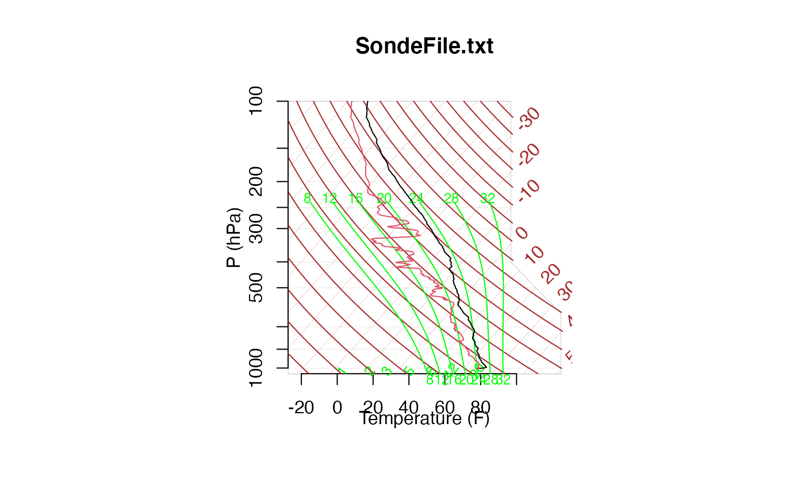

getsonde.Rdgetsonde takes a common radiosonde data file and reads it in as an R dataframe.
getsonde(filename, datakey="------", varkey=" Time", unitkey=" sec")Full path and file name of radiosonde data.
character string identifying the line preceeding the datastream. The string gets compared to the first N characters of each line, so all whitespace is important!
character string identifying the line containing the variable names. The string gets compared to the first N characters of each line, so all whitespace is important!
character string identifying the line containing the units of the variables. The string gets compared to the first N characters of each line, so all whitespace is important!
getsonde assumes the data is in a very common format for radiosonde data.
The files are typically ASCII files with a header of unknown length stating such
things as the location and time of the data collection etc. Appended to this is
a table of data where each column is a particular quantity and each row corresponds
to the time of the observation. This typically has a header identifying the
quantity in each of the columns and is separated from the data by a particular
character string. The location of this string in the file is crucial in deciphering
the start of the datastream from the metadata. For much more about the file format,
look at the example in RadioSonde/inst/exampleData/ExampleSonde.txt. To find the
exact path and file name on your system try
system.file("exampleData", "ExampleSonde.txt", package = "RadioSonde").
Returns a dataframe with the following items, if present in the input file.
Note that each of these items can be present in any order in the input file.
time in seconds since weather balloon launched or recording begins.
Pressure in mb.
Dry-bulb Temperature in degrees C.
Dew point temperature in degrees C.
Relative Humidity (Percent).
East-West wind component (m/s).
North-South wind component (m/s).
Wind speed (m/s).
Wind direction (deg.).
Ascension rate of weather balloon (m/s).
Longitude of weather balloon.
Latitude of weather balloon .
Range (see warning below)
Azimuth of weather balloon from originating station (see warning below)
Altitude of weather balloon (m).
Quality Control (QC) flag for pressure (see note below)
QC flag for temperature (see note below)
QC flag for humidity (see note below)
QC flag for U Component (see note below)
QC flag for V Component (see note below)
QC flag for Ascension rate (see note below)
If the units are avialable in the datafile, they are included in
the dataframe as the attribute units.
Rather than throw away the original header information, which usually contains
valuable metadata, it is included as another attribute: metadata.
The Quality Control information (flags): qp, qt, qh, qu, qv, and quv
are generated at JOSS are based on the automated or visual checks made.
The JOSS QC flags are as follows:
99.0 means it is unchecked,
1.0 implies datum seems physically reasonable (good),
2.0 implies datum seems questionable on physical basis (maybe),
3.0 implies datum seems to be in error (bad),
4.0 implies datum is interpolated (estimated), and
9.0 implies datum was missing in original file (missing).
The connotation of fields is not exactly standard. Different recording systems use these fields in different ways. Hence, they cannot be automatically interpreted without knowledge of the recording system.
# Read a typical radiosonde (ASCII) datafile, headers and all.
# The datakey,varkey,and unitkey arguments come from examining
# the datafile. The whitespace is important.
# The Sonde text file is stored in this package as a text dataset (this is just
# to make it easier to include in the package.)
# First create a real text file to read in
data( ExampleSondeText)
write( ExampleSondeText, file="SondeFile.txt")
sample.sonde <- getsonde("SondeFile.txt")
# NOTE this assumes that the default datakey, varkey and unitkey.
# it is best to check the file for these choices!
attr(sample.sonde,"units")
#> [1] "sec" "mb" "C" "C" "%" "m/s" "m/s" "m/s" "deg" "m/s" "deg" "deg"
#> [13] "km" "deg" "m" "mb" "C" "%" "m/s" "m/s" "m/s"
attr(sample.sonde,"metadata")
#> [1] "Data Type: CLASS 10 SECOND DATA"
#> [2] "Project ID: TOGA/COARE: KAVIENG"
#> [3] "Launch Site Type/Site ID: FIXED, KAV"
#> [4] "Launch Location (lon,lat,alt): 150 48.00E, 02 35.00S, 150.8, -2.58333, 3"
#> [5] "GMT Launch Time (y,m,d,h,m,s): 1993, 01, 17, 17:12:16"
#> [6] "Sonde Type/ID/Sensor ID/Tx Freq: VAISALA RS80-15N 0, 0, 400.525"
#> [7] "Met Processor/Met Smoothing: NCAR RS80 PROCESSOR, 10 SECONDS"
#> [8] "Winds Type/Processor/Smoothing: OMEGA, TRIMBLE MINI-OMEGA, 240 SECONDS"
#> [9] "Pre-launch Met Obs Source: CAMPBELL SCIENTIFIC CR10"
#> [10] "System Operator/Comments: KUSUNAN SULUSUL, (REPROCESSED),NONE"
#> [11] "/"
#> [12] "/"
#> [13] " Time Press Temp Dewpt RH Uwind Vwind Wspd Dir dZ Lon Lat Rng Az Alt Qp Qt Qh Qu Qv Quv"
#> [14] " sec mb C C % m/s m/s m/s deg m/s deg deg km deg m mb C % m/s m/s m/s"
#> [15] "------ ------ ----- ----- ----- ------ ------ ----- ----- ----- -------- ------- ----- ----- ------- ---- ---- ---- ---- ---- ----"
# skewt plot of data
plotsonde(sample.sonde,title="SondeFile.txt")

#
# Read the same radiosonde dataset, but ignore the units ...
#
datakey <- "------"
varkey <- " Time"
sample.sonde <- getsonde("SondeFile.txt",datakey,varkey)
attr(sample.sonde,"metadata")
#> [1] "Data Type: CLASS 10 SECOND DATA"
#> [2] "Project ID: TOGA/COARE: KAVIENG"
#> [3] "Launch Site Type/Site ID: FIXED, KAV"
#> [4] "Launch Location (lon,lat,alt): 150 48.00E, 02 35.00S, 150.8, -2.58333, 3"
#> [5] "GMT Launch Time (y,m,d,h,m,s): 1993, 01, 17, 17:12:16"
#> [6] "Sonde Type/ID/Sensor ID/Tx Freq: VAISALA RS80-15N 0, 0, 400.525"
#> [7] "Met Processor/Met Smoothing: NCAR RS80 PROCESSOR, 10 SECONDS"
#> [8] "Winds Type/Processor/Smoothing: OMEGA, TRIMBLE MINI-OMEGA, 240 SECONDS"
#> [9] "Pre-launch Met Obs Source: CAMPBELL SCIENTIFIC CR10"
#> [10] "System Operator/Comments: KUSUNAN SULUSUL, (REPROCESSED),NONE"
#> [11] "/"
#> [12] "/"
#> [13] " Time Press Temp Dewpt RH Uwind Vwind Wspd Dir dZ Lon Lat Rng Az Alt Qp Qt Qh Qu Qv Quv"
#> [14] " sec mb C C % m/s m/s m/s deg m/s deg deg km deg m mb C % m/s m/s m/s"
#> [15] "------ ------ ----- ----- ----- ------ ------ ----- ----- ----- -------- ------- ----- ----- ------- ---- ---- ---- ---- ---- ----"